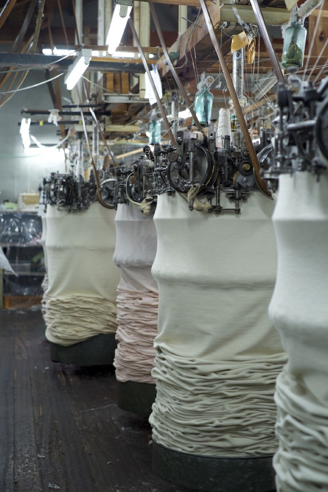
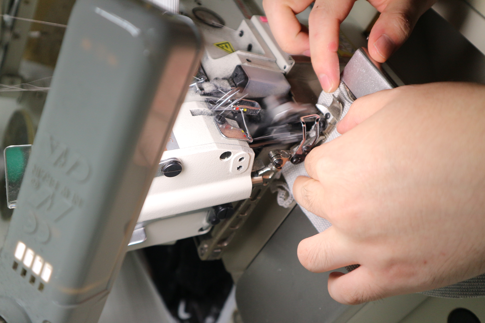
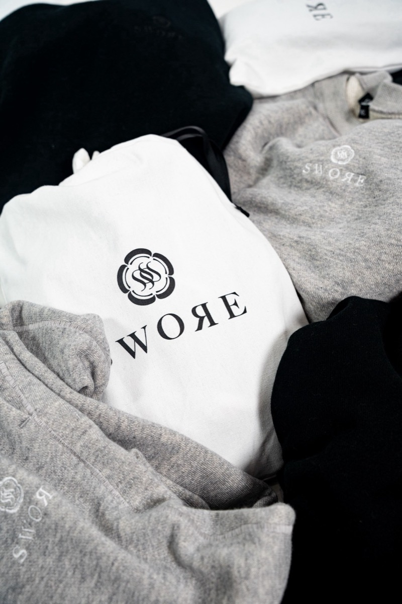

「吊り編み機」によって編まれたこの生地は1時間に約50cmしか生産できません。
「非効率」と引き換えに創り出された至高の風合いをご堪能ください。
百年以上前の吊り編み機で、急がず、時間をかけて編み上げた生地だけを使っています。
その生地を、東京・両国にある縫製工場の職人が一着ずつ仕立てます。

吊り編み機は、百年以上前から使われてきた編み機です。
現在主流の丸編み機と異なり、生地を吊り下げながら編むため、糸に余計なテンションがかかりません。
現在主流の編み機に比べ、吊り編み機が1時間に編めるのは約50cm。ゆっくりと時間をかけて編むことで生地が空気を含み、やわらかさとふくらみが生まれます。
かつて日本のスウェット生地づくりを支えた吊り編み機は、高度経済成長期に効率の良い編み機へと置き換えられ、その数を大きく減らしました。現在稼働している吊り編み機の多くは、和歌山県に残っています。
扱える職人も、限られています。
SWOЯEは、この機械で編まれた生地のみを使います。

東京・両国の縫製工場で、熟練の職人が細部まで丁寧に、一着ずつ仕立てています。
生地は吊り編み機で編み、縫製は東京で。目指したのは、長く着続けることを前提にした日本製のプロダクトです。
肌に触れた瞬間の静かな安心感と、着込むほどに身体へ馴染んでいく風合い。

速度ばかりを求められ、早く結果を出そうと自らを無理に引き伸ばせば、表層は整っても、その内側には張り詰めた緊張と脆さが残ってしまう。急がず、土台を飛び越えず、自らの重みを受け止めながら時間をかけて積み重ねたものだけが、やがて誰にも奪われない静かな強さへと変わっていくのだと思います。
効率や早さの先にはない、本質的な温もりを。非効率の中にある豊かさを。消費されるための服ではなく、あなたの奥底に永く寄り添い続ける一着のために、SWOЯEはこの誠実な歩みとともにものづくりを続けています。
残りの三割に、もう一度かたちを。
吊り編みリユース事業は、裁断のあとに残る生地を活かし、新たなかたちにしてお届けする私たちの取り組みです。